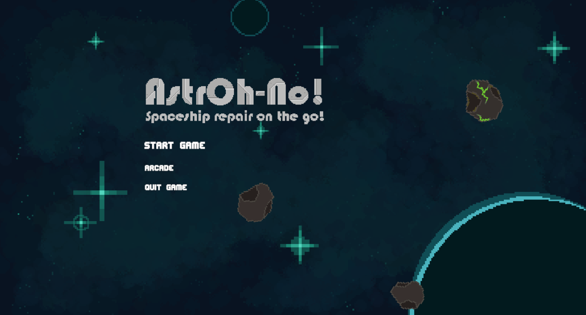
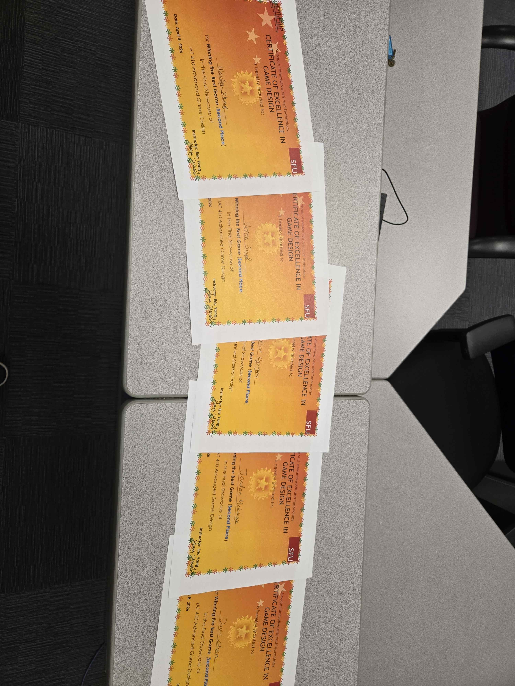

AstrOh-No! Spaceship Repair on the go! (Process Analysis)

Project Contents
PROJECT OBJECTIVE/PURPOSE
To create a fast-paced and engaging 2D sci-fi survival game where players repair a damaged spaceship while managing enemies, asteroids, hazards, and ship systems under pressure.
PROJECT MEMBER(S)
Davis Chen
Wesley Zhang
Jordan McKenzie
Veron Singh
TOOLS USED
Unity
GitHub
Figma
Itch.io
Visual Studio 2022
WordPress
MY ROLE(S)
Programming
QA Testing
Gameplay Systems
Balancing Support
Level/System Diagrams
Technical Documentation
AstrOh-No! Overview
AstrOh-No! is a 2D sci-fi survival game where the player takes on the role of a spaceship mechanic repairing damage while avoiding asteroids, enemies, and environmental hazards. The core idea was to create a fast-paced multitasking experience where repairing, surviving, and prioritizing threats all happen at the same time.
AstrOh-No! Initial Concept
At the start of the project, our team focused on defining the game's concept, structure, and core loop. I helped visualize the game's systems by creating flowboards and diagrams in Figma, including the functional flowboard, core loop diagram, and smart depth diagram. These helped the team understand how players would move between menus, gameplay, shop screens, win/loss states, and repeated survival decisions.
AstrOh-No! Development Process
During development, I helped turn the concept into a playable Unity prototype. Specifically, I contributed through programming, implementing grid-panel labelling, several gameplay systems, and the arcade mode spawning/difficulty logic. Some systems helped make the game more modular for other developers, while others heavily impacted the game, giving players more ways to respond to pressure instead of it feeling too scripted.
AstrOh-No! Challenges
One major challenge was making the game understandable during chaotic gameplay, essentially with onboarding. Playtesting showed that some players did not immediately understand the combat, repair goals, or what certain UI elements meant. As we introduced new enemies, hazards, tools, and ship systems, clarity became harder to maintain. Another challenge was balancing pressure so the game felt intense without becoming unfair. This was especially important for arcade mode, where threat management and recovery breaks had to work together.
AstrOh-No! Final Results
By the final milestone, AstrOh-No! had become a playable WebGL game that had a standard mode and arcade mode, with more polished sound effects, visuals, and balancing. The final game successfully delivered the feeling of being a mechanic under pressure, where players must constantly repair, dodge, fight, and make quick decisions. This project helped me improve my Unity programming, systems design, playtesting, and balancing skills, while also teaching me how important iteration is when turning a game idea into a finished experience. We also won second place for the best game of the semester!

Bonus!
Feel free to try out our game on Itch.io!
Play AstrOh-No!